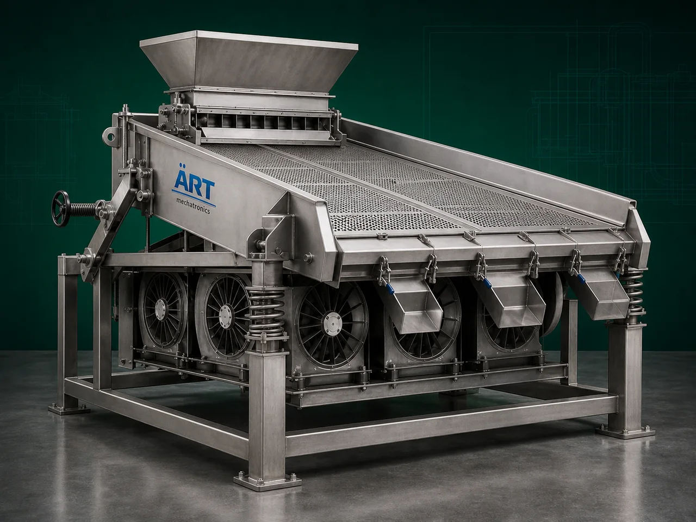

Gravity Separator Machine (Industrial Density & Specific Weight Separation System)
A Gravity Separator Machine, also known as an Industrial Gravity Separator or Density Separation Machine, is an advanced industrial equipment designed for separating grains, seeds, pulses, nuts, spices, particles, and bulk materials based on differences in density, specific weight, and aerodynamic properties.

About the Gravity Separator
The machine is highly effective in removing:
- Damaged grains
- Immature seeds
- Hollow particles
- Stones and heavy impurities
- Insect-damaged materials
- Lightweight defective products
Gravity separators are widely used in industries such as:
• Seed processing plants
• Grain processing industries
• Rice mills
• Pulses industries
• Spice industries
• Food processing plants
• Coffee and tea industries
• Agro product industries
where high purity, export-quality grading, and density-based material separation are essential.
The machine works using a combination of:
- Vibratory motion
- Controlled airflow
- Inclined deck separation
- Density stratification technology
which separates heavier and lighter particles efficiently.
Gravity separator machines are suitable for:
- Seed grading
- Grain density separation
- Pulse cleaning
- Nut separation
- Spice purification
- Food product quality improvement
ART Mechatronics offers high-performance gravity separator machines, engineered for high separation accuracy, continuous operation, energy-efficient performance, and reliable industrial processing.
One machine, many names
Buyers search for this equipment under many terms — we manufacture all of them:
Working Principle of Gravity Separator Machine
Creates density-based stratification
Machine separates:
- Heavy good product
- Medium quality material
- Lightweight defective product
- Stones and impurities
Types of Gravity Separator Machines
- 1. Seed Gravity Separator Machine
Specially designed for:
- Seed grading
- Seed quality improvement
- 2. Grain Gravity Separator
Used for:
- Wheat
- Rice
- Maize
- Grain purification applications
- 3. Vibro Gravity Separator
Uses: ✔ Vibratory deck separation technology for precise density classification.
- 4. Air Gravity Separator
Uses: ✔ Controlled airflow and density separation for lightweight impurity removal.
- 5. Multi Deck Gravity Separator
Suitable for: ✔ Large-scale industrial grading plants
- 6. Heavy Duty Industrial Gravity Separator
Designed for: ✔ Continuous high-capacity industrial processing operations
Industries Using Gravity Separator Machine
🌱 Seed Processing Industry
- Seed grading and quality enhancement
🌾 Grain Processing Industry
- Grain density separation and cleaning
🍚 Rice Mill Industry
- Rice quality improvement
🍃 Pulses Industry
- Dal density grading and cleaning
🌶️ Spice Industry
- Spice impurity and defective particle removal
☕ Coffee & Tea Industry
- Density-based product grading
🍃 Food Processing Industry
- Food quality classification and purification
Features & Advantages
- Accurate density-based separation
- Removes damaged and lightweight particles
- Improves product purity and export quality
- Continuous industrial operation
- Multi-grade separation capability
- Heavy-duty industrial construction
- Low maintenance requirement
- Energy-efficient operation
- Improves downstream processing quality
Technical Highlights
- Separation Technology:
- Density separation
- Airflow separation
- Vibratory grading
- Deck Type:
- Inclined perforated deck
- Construction: Stainless Steel / Mild Steel
- Air System:
- Integrated blower and airflow control
- Capacity: Small to large industrial throughput
- Operation:
- Semi-automatic
- Fully automatic PLC-based
Turnkey Gravity Separation Solutions
ART Mechatronics offers:
- Complete gravity separation systems
- Cleaning and grading line integration
- Dust collection and aspiration systems
- Conveying and handling systems
- Installation & commissioning
- After-sales service & AMC
Why Choose Art Mechatronics
- Expertise in industrial grading and density separation systems
- Customized solutions for multiple agro and food products
- High-performance and durable machine construction
- Energy-efficient and reliable industrial designs
- Proven industrial performance across sectors
Applications
- Seed Processing Plants
- Grain Processing Industries
- Rice Mills
- Pulse Processing Units
- Spice Manufacturing Facilities
- Food Processing Plants
Related Cleaning, Sorting & Grading machines
Get pricing & specs for the Gravity Separator
Share the product, target capacity, current process and plant location. These details help our engineers discuss the right machine or line configuration.
One partner, from design to start-up
ART Mechatronics designs, manufactures, installs and commissions your Gravity Separator solution with regional presence in India, UAE and Thailand.